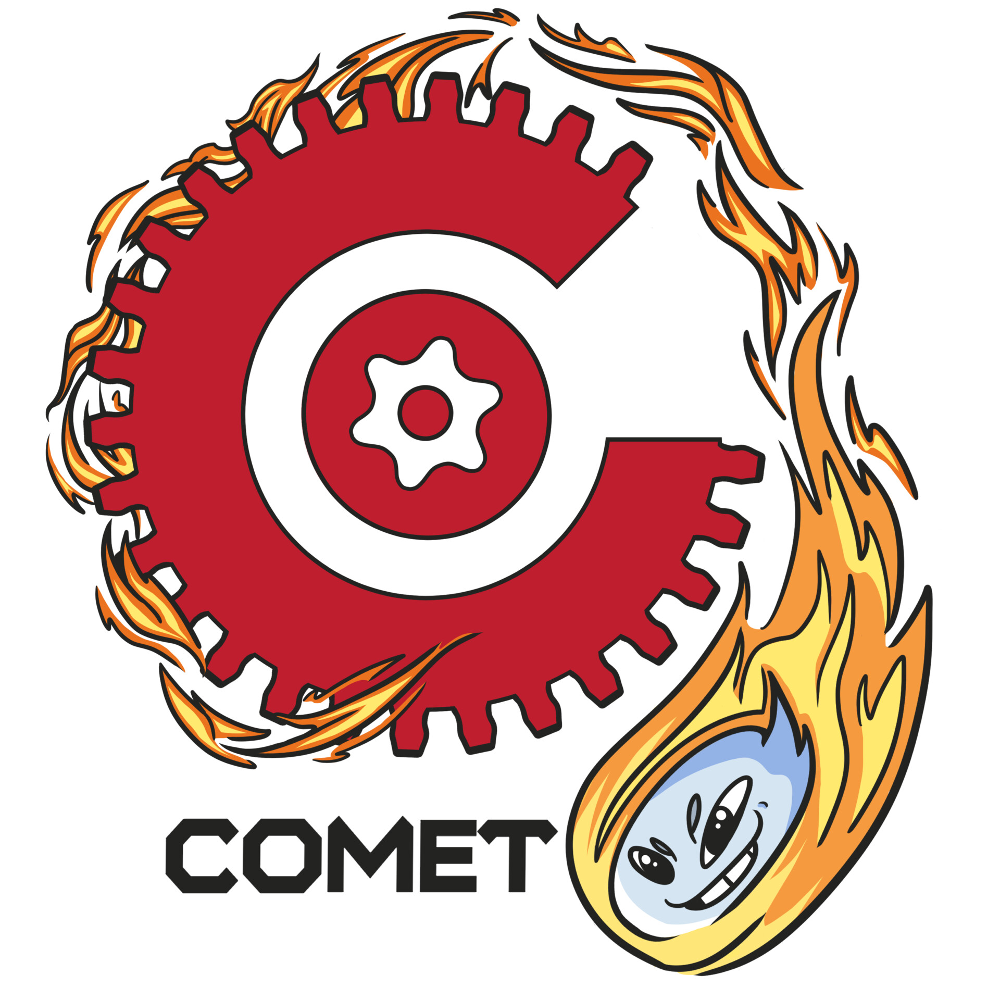

I really like reading fantasy books, my favorite series is one called, "The Dresden Files" by Jim Butcher (I high recomend it!). So far I like playing video games every once in a while, right now I've been playing a lot of ARC Raiders and going hikkig when I get tired of being indoors to much.
1. Richardson High School (CLASS of 2020)
2. Dallas College (CLASS of 2024)
3 .University of Texas Dallas (Undergraduate)
1. Micro Center (2025 - Present)
2. Old Navy (2024 - 2025)
3. Home Depot (2022 - 2024)
